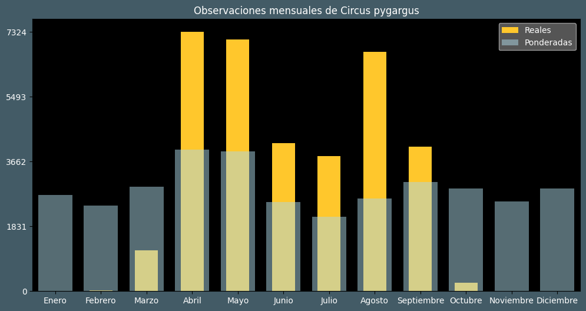

Observaciones por mes
Observations por hora

Categoría IUCN: ?
Género: Circus
Familia: Accipitridae
Orden: Accipitriformes
Descubrimiento: Linnaeus (1758)
| Idioma | Nombre |
|---|---|
| Afrikaans (af) | Bloupaddavreter (blouvleivalk) |
| Arabic (ar) | مرزة منتاجو |
| Belarusian (be) | Поплаўны лунь |
| Bulgarian (bg) | Ливаден блатар |
| Catalan (ca) | Arpella cendrosa |
| Chinese (zh) | 乌灰鹞 |
| Chinese traditional (zh-TW) | 烏灰鷂 |
| Croatian (hr) | Eja livadarka |
| Czech (cs) | Moták lužní |
| Danish (da) | Hedehøg |
| Dutch (nl) | Grauwe kiekendief |
| English (en) | Montagu's harrier |
| Estonian (et) | Soo-loorkull |
| Finnish (fi) | Niittysuohaukka |
| French (fr) | Busard cendré |
| German (de) | Wiesenweihe |
| Greek (el) | Λιβαδόκιρκος |
| Hebrew (he) | זרון פס |
| Hungarian (hu) | Hamvas rétihéja |
| Icelandic (is) | Gráheiðir |
| Indonesian (id) | ? |
| Italian (it) | Albanella minore |
| Japanese (ja) | ヒメハイイロチュウヒ |
| Korean (ko) | ? |
| Latvian (lv) | Pļavu lija |
| Lithuanian (lt) | Pievinė lingė |
| Maceodnian (mk) | Ливадска еја |
| Malayalam (ml) | മൊൻടാഗു മേടുതപ്പി |
| North_sami (se) | Niitohávut |
| Norwegian (no) | Enghauk |
| Persian (fa) | سنقر گندم زار |
| Polish (pl) | Błotniak łąkowy |
| Portuguese (pt) | Águia-caçadeira |
| Russian (ru) | Луговой лунь |
| Serbian (sr) | Eja livadarka |
| Slovak (sk) | Kaňa popolavá |
| Spanish (es) | Aguilucho cenizo |
| Swedish (sv) | Ängshök |
| Thai (th) | ? |
| Turkish (tr) | Çayır delicesi |
| Ukrainian (uk) | Лунь лучний |